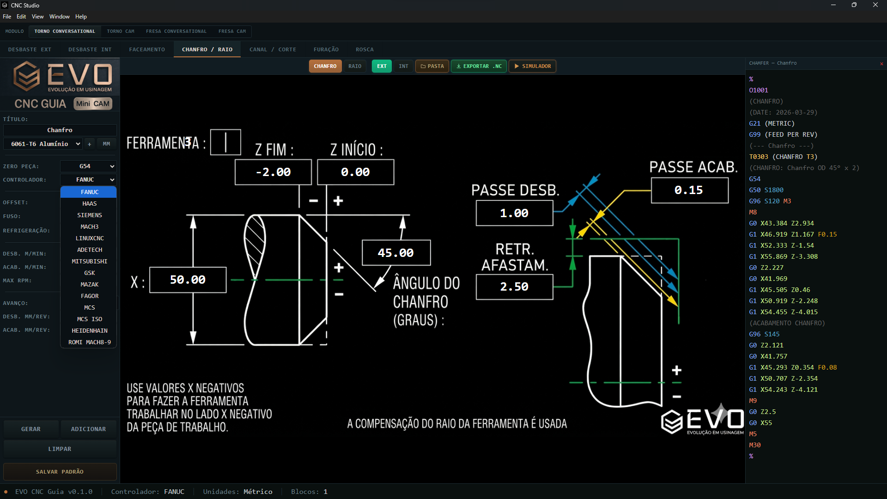
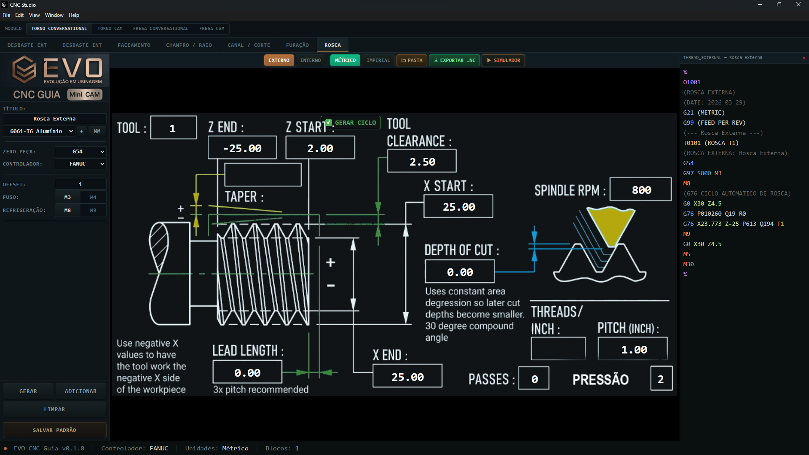

Do setup ao código final. Torno e fresa, 23 controles suportados. Programe em minutos o que antes levava horas.
O EvoCAM é um software de programação CAM e conversational voltado à realidade de pequenas e médias usinagens. Foi desenvolvido com visão prática, priorizando rapidez, clareza e padronização.
Em vez de depender de CAMs complexos ou programação manual demorada, o EvoCAM simplifica a rotina do programador CNC com uma interface direta, operações guiadas e geração de código pronta para a máquina.
Oficinas que precisam de agilidade sem a complexidade de CAMs caros e pesados.
Profissionais que querem reduzir tempo de programação e eliminar retrabalho.
Quem está na máquina e precisa de programas confiáveis, prontos para rodar.
Quem quer padronizar processos e escalar produção sem depender de uma pessoa só.
Horas digitando G-code manualmente, consultando manuais e decorando códigos.
Só uma pessoa sabe programar. Quando ela falta, a produção para.
Um sinal trocado, uma coordenada errada. Peça refugada, ferramenta quebrada.
Cada programador faz de um jeito. Sem padrão, sem rastreabilidade.
Ensinar programação CNC do zero demora meses. Turnover alto piora tudo.
Softwares pesados, caros e cheios de funções que a oficina não precisa.
Programe em minutos o que antes levava horas. Operações guiadas aceleram tudo.
Todo programa sai no mesmo padrão, independente de quem programou.
Validação visual antes de rodar. Simulador integrado previne problemas.
Interface limpa e objetiva. Sem menus infinitos ou curva de aprendizado longa.
Qualquer operador treinado consegue gerar programas. Sem depender de especialista.
Menos tempo programando, mais tempo produzindo. Máquina rodando é dinheiro entrando.
Preencha parâmetros em uma interface guiada e o programa é gerado automaticamente.
G-code completo, formatado e pronto para enviar à máquina.
15+ operações prontas: desbaste, acabamento, rosca, cavidade, furação e mais.
Defina avanço, rotação, profundidade. Visualize o que cada campo faz.
Visual técnico, escuro e profissional. Feito para o chão de fábrica.
Módulos dedicados para torneamento e fresamento, conversational e CAM.
23 controles CNC suportados. Fanuc, Haas, Siemens, Mazak e mais 19.
Atualizações constantes com novas operações, controles e melhorias.
Selecione a operação, insira medidas, defina ferramentas e condições de corte.
Combine operações na sequência correta. Visualize o toolpath antes de gerar.
Revise, simule e exporte o G-code formatado para o controle da sua máquina.
Interface profissional, visual técnico e simulação integrada.


Lenta — horas por programa
Cada um faz de um jeito
Alto — digitação manual
Refaz tudo do zero
Exige experiência avançada
Máquina parada esperando
Rápida — minutos por programa
Padrão consistente sempre
Baixo — validação visual integrada
Reutiliza operações e templates
Interface guiada e intuitiva
Programa pronto, máquina rodando
Setup único + mensalidade por módulo. Torno Conversacional, Torno CAM, Fresa Conversacional, Fresa CAM.
Configuração inicial, instalação e treinamento básico. Pagamento único.
Pós-processadores customizados, integrações específicas e adaptações sob medida.
Solicite uma demonstração gratuita e veja como o EvoCAM pode acelerar sua produção.
Para os dois. O software tem módulos dedicados: Torno Conversacional, Torno CAM, Fresa Conversacional e Fresa CAM.
Não. A interface guia você passo a passo, desde a escolha da operação até a geração do G-code final.
Sim, foi exatamente para esse público que o EvoCAM foi criado. Sem a complexidade de CAMs industriais pesados.
Sim. Preencha o formulário abaixo ou nos chame no WhatsApp. Fazemos uma apresentação completa.
Sim. O EvoCAM recebe atualizações constantes com novas operações, controles e melhorias.
Sim. Operações que levariam horas são geradas em minutos. O G-code sai completo e formatado.
Preencha o formulário e entraremos em contato para agendar uma demonstração.